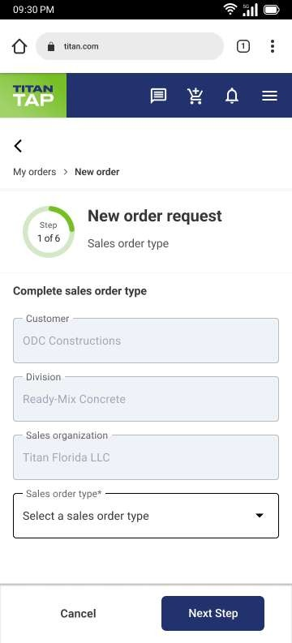
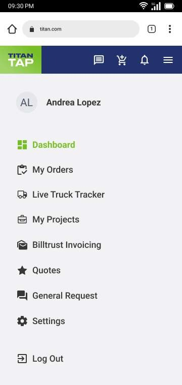
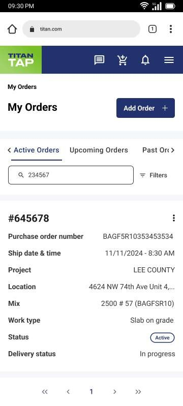
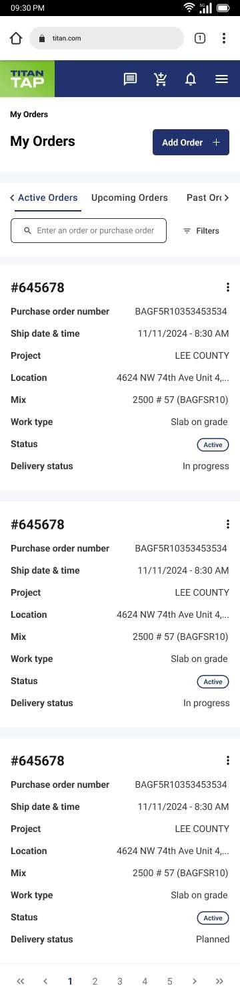
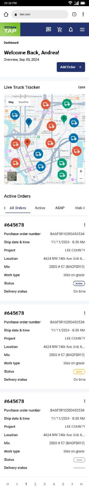
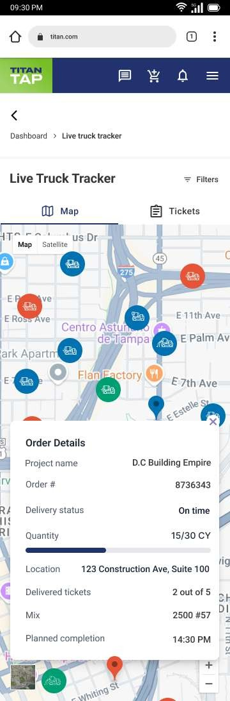
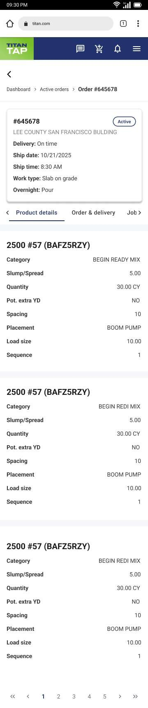
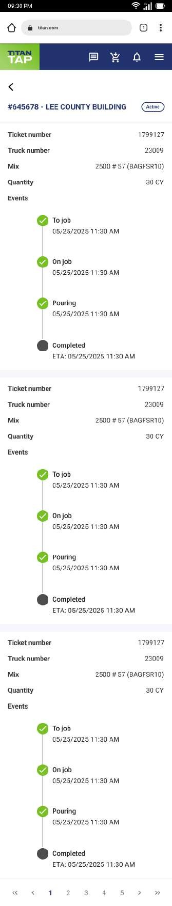

Portal web para que los clientes de Titan America en EE.UU. puedan hacer pedidos de concreto Ready-Mix, ver el estado en tiempo real y rastrear los camiones en ruta a su obra.
Web portal for Titan America customers in the US to place Ready-Mix concrete orders, see real-time status, and track trucks en route to their job site.
DXD Specialist — diseño UX/UI completo del portal en Figma con Material UI. Investigación de requisitos con usuarios finales, wireframing, prototipado y handoff al equipo de desarrollo.
DXD Specialist — complete UX/UI design of the portal in Figma with Material UI. Requirements research with end users, wireframing, prototyping, and developer handoff.
R3 y R4 en producción. Extensión del contrato a soporte y mantenimiento continuo.
R3 and R4 in production. Contract extended to ongoing support and maintenance.
🏗️ Construcción · LogísticaConstruction · Logistics
Titan America es uno de los gigantes de la industria de materiales de construcción en Estados Unidos y Europa. Su operación de Ready-Mix — la producción y entrega de concreto premezclado — involucra cientos de camiones mixer distribuidos en múltiples estados, coordinando pedidos de clientes como constructoras, contratistas y proyectos de obra civil.
Titan America is one of the giants of the construction materials industry in the United States and Europe. Their Ready-Mix operation — production and delivery of premixed concrete — involves hundreds of mixer trucks distributed across multiple states, coordinating orders from customers like construction companies, contractors, and civil engineering projects.
Antes del portal, el proceso de pedido y seguimiento se hacía de forma manual: era fragmentado y dependiente de llamadas telefónicas. Baufest fue contratada para construir el Cypress Customer Portal, una plataforma digital que centralizara la operación. Fui responsable del diseño UX/UI completo como DXD Specialist desde el MVP hasta el Release 4.
Before the portal, the ordering and tracking process was done manually: it was fragmented and phone call-dependent. Baufest was contracted to build the Cypress Customer Portal, a digital platform to centralize operations. I was responsible for the complete UX/UI design as DXD Specialist from MVP through Release 4.
Trabajé de la mano con desarrolladores .NET y React, QA, DevOps y el equipo de negocio de Titan, en un entorno ágil, aplicando metodologías ágiles para el levantamiento de requerimientos con usuarios finales.
I worked alongside .NET and React developers, QA, DevOps, and the Titan business team, in an agile environment, applying agile methodologies for end-user requirements research.
Transformar un proceso de pedido de concreto 100% telefónico y manual en una plataforma digital self-service que los clientes de Titan pudieran usar desde obra, con información en tiempo real.
Transform a 100% phone-based and manual concrete ordering process into a digital self-service platform that Titan's customers could use from the job site, with real-time information.
Antes todo se hacía de forma manual: los clientes hacían pedidos por teléfono, no tenían visibilidad del estado del pedido ni de la ubicación del camión, y dependían de llamar al dispatcher para cualquier cambio o cancelación.
Before, everything was done manually: customers placed orders by phone, had no visibility into order status or truck location, and had to call the dispatcher for any change or cancellation.
Crear un portal que permitiera a los clientes hacer pedidos, ver el estado en tiempo real, rastrear camiones en ruta y gestionar proyectos desde cualquier dispositivo — especialmente desde móvil en obra.
Create a portal allowing customers to place orders, see real-time status, track trucks en route, and manage projects from any device — especially from mobile on the job site.
Trabajamos con metodologías ágiles para el levantamiento de requisitos con los usuarios finales del portal: clientes de Titan (constructoras, contratistas), empleados de Titan (dispatchers, supervisores) y administradores del sistema.
We used agile methodologies for requirements research with the portal's end users: Titan customers (construction companies, contractors), Titan employees (dispatchers, supervisors), and system administrators.
Realizamos workshops presenciales y remotos con clientes de Titan en Florida para entender sus flujos de trabajo actuales, los momentos críticos del proceso de pedido y las necesidades desde dispositivos móviles en campo.
We conducted in-person and remote workshops with Titan customers in Florida to understand their current workflows, the critical moments in the ordering process, and mobile device needs in the field.
Definimos los flujos principales, el sistema de diseño basado en Material UI y la arquitectura de información del portal para alinear a los equipos de diseño, desarrollo y negocio.
We defined the main flows, the Material UI-based design system, and the portal's information architecture to align design, development, and business teams.
Constructora o contratista que hace pedidos frecuentes de concreto. Necesita hacer pedidos y ver ETA desde el celular en obra.
Construction company or contractor making frequent concrete orders. Needs to place orders and see ETA from phone on site.
Dispatcher o supervisor que gestiona operaciones. Necesita acceso rápido vía SSO y visibilidad de todas las órdenes activas.
Dispatcher or supervisor managing operations. Needs quick SSO access and visibility of all active orders.
Gestiona configuración del sistema. Necesita agregar nuevas regiones y plantas sin cambios de código.
Manages system configuration. Needs to add new regions and plants without code changes.
¿Cómo podríamos diseñar una plataforma que funcione igual de bien para un contratista en obra mirando su teléfono bajo el sol, y para un dispatcher gestionando 50 pedidos activos desde su escritorio?
How might we design a platform that works just as well for a contractor on site looking at their phone under the sun, and for a dispatcher managing 50 active orders from their desk?
El portal se construyó en releases iterativos. Diseñé cada release en Figma usando componentes de Material UI, con handoff detallado al equipo de React.
The portal was built in iterative releases. I designed each release in Figma using Material UI components, with detailed handoff to the React team.
Las pantallas a continuación muestran el flujo real de la app: el formulario de nuevo pedido y el menú de navegación principal de Titan TAP.
The screens below show the actual app flow: the new order form and the main navigation menu of Titan TAP.

Nuevo pedido — Paso 1 de 6
Tipo de orden, cliente y división
New order — Step 1 of 6
Order type, customer and division

Menú de navegación principal
Titan TAP — usuario: Andrea Lopez
Main navigation menu
Titan TAP — user: Andrea Lopez
Trabajé como única diseñadora UX/UI del equipo, colaborando directamente con el product owner, desarrolladores y QA. Diseñé en Figma con componentes de Material UI.
I worked as the sole UX/UI designer on the team, collaborating directly with the product owner, developers, and QA. I designed in Figma with Material UI components.
Construí el sistema de diseño del portal en Figma usando la librería de Material UI, adaptada a la identidad visual de Titan America. Esto permitió handoff rápido al equipo de React y coherencia visual entre releases.
I built the portal design system in Figma using the Material UI library, adapted to Titan America's visual identity. This enabled fast handoff to the React team and visual coherence across releases.
En Release 4, rediseñé los data tables a cards optimizadas para pantallas pequeñas, reduciendo la fricción para usuarios en campo que acceden desde el celular.
In Release 4, I redesigned data tables into cards optimized for small screens, reducing friction for field users accessing from their phones.
La pantalla de My Orders en la app real ilustra el resultado del rediseño: cards escaneables con estado, mezcla, obra y fecha de entrega, más pestañas de filtrado y búsqueda integrada.
The My Orders screen in the live app illustrates the redesign result: scannable cards with status, mix, project, and delivery date, plus filter tabs and integrated search.

My Orders — card de pedido activo
Order #645678, LEE COUNTY
My Orders — active order card
Order #645678, LEE COUNTY

My Orders — búsqueda y filtros
Active / Upcoming / Past Orders
My Orders — search and filters
Active / Upcoming / Past Orders
Una de las funcionalidades más críticas del portal: el mapa en tiempo real que muestra la ubicación de los camiones en ruta, el ETA y el estado de entrega, directamente desde el celular en obra.
One of the portal's most critical features: the real-time map showing truck locations en route, ETA, and delivery status, directly from the phone on the job site.

Dashboard — mapa de camiones + pedidos activos
Dashboard — truck map + active orders

Live Truck Tracker — pantalla completa
Order #8736343 · D.C Building Empire
15/30 CY · 2 de 5 tickets entregados
Live Truck Tracker — full screen
Order #8736343 · D.C Building Empire
15/30 CY · 2 of 5 tickets delivered
Cada pedido expone la información técnica completa de la mezcla, la logística de entrega y un timeline de eventos por ticket — diseñado para que el operador en obra pueda verificar el estado con un vistazo.
Each order exposes the complete technical mix information, delivery logistics, and a per-ticket event timeline — designed for the on-site operator to verify status at a glance.

Detalle de pedido #645678
Mix 2500 #57 · 30 CY · BOOM PUMP
Slab on grade · Overnight Pour
Order #645678 detail
Mix 2500 #57 · 30 CY · BOOM PUMP
Slab on grade · Overnight Pour

Tickets de entrega — Order #645678
Truck 23009 · Mix 2500 #57 · 30 CY
Timeline: To job → On job → Pouring → ETA 11:30 AM
Delivery tickets — Order #645678
Truck 23009 · Mix 2500 #57 · 30 CY
Timeline: To job → On job → Pouring → ETA 11:30 AM
Ambos releases alcanzaron go-live en los plazos comprometidos. El éxito del proyecto aseguró la extensión del contrato a R4 y posteriormente a soporte y mantenimiento continuo.
Both releases reached go-live within committed timelines. The project's success secured the contract extension to R4 and subsequently to ongoing support and maintenance.
Siguiente proyectoNext project
Aramark — Quoting Tool →